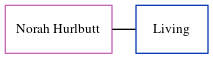

Norah H Cowell (née Hurlbutt)
[ Home ] | [ Calendar ] | [ Surnames Index ] | [ Census Index ] | [ Family History ]Norah Hurlbutt, the wife of John N Cowell (the second cousin on the mother's side of Nigel Horne), and married John in Chichester, Sussex, England in 1955.
Media
England & Wales marriages 1837-2008 Transcription - BMD-M-1955-2-AZ-000251-062
England & Wales marriages 1837-2008 - BMD/M/1955/2/AZ/000593/116
Family Tree
Generated by ged2site. Last updated on Jun 11, 2024